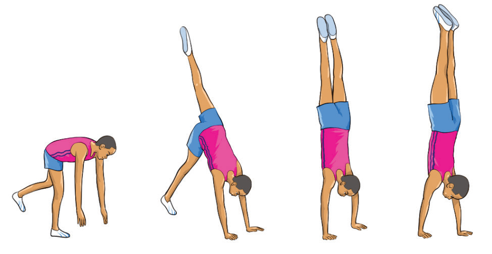

abcdFigure 4.3: Handstand
Activity 4.4
Search on the internet how a handstand is used in gymnastics, then practice it.
Exercise 4.2
1.
Why is tucking the knees important in backward roll?2.
Why it is important for a gymnast to maintain a straight body position during a handstand, and how does this improve performance.3.
How can gymnasts improve their handstand technique to ensure better alignment and control?Cartwheel
A cartwheel is a fundamental gymnastics skill where a gymnast moves sideways in a hand-hand-foot-foot motion, resembling the spokes of a turning wheel.
It helps to develop coordination, balance, flexibility, agility, strength, body control, and serves as a foundation for more advanced tumbling skills.
The following steps will help you practice the cartwheel:
(i)Start by placing one foot in front and the other behind, with your front knee bent;
(ii)
Step forward with your stronger foot and lift your arms straight up by your ears.Your back leg should be straight and extended;
(iii)As you lean forward, place your first hand on the floor and quickly place your second hand in line with the first;
SPORTS STUDIES FORM TWO.indd 1109/17/25 9:54 AM